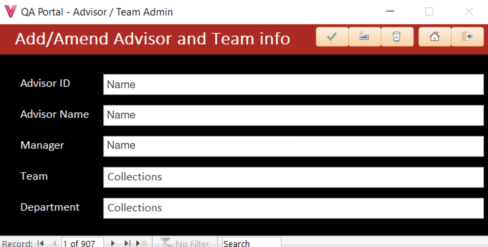

I built a system using MS Access for the Quality Assurance (QA) team at my previous workplace. The team monitors call centre agents and the quality of their calls, including soft skills and adherence to company policies and government/industry regulations, and scores them against the standard agreed upon by QA and department managers.
The data collection for this was done using Excel and due to there being different approaches to the monitoring and storing of information for each department, staff found it time consuming and difficult to keep track of the various files, maintain organisation of their workload, and produce reports based in the data being collected.
There were two main aims of this system. Firstly, to consolidate all of the data so that it could be stored in a central location, and secondly, to provide an easy to use interface where the data could be submitted and accessed, and reports could be compiled.
I have included information on a selection of the system's features below:
The menu follows the user login screen which checks that the staff member is authorised to use the system. There are links to all the main areas and they are organised by utility.
I used VBA to create the logic within the scorecards and calculate the scores based on the users selecting pass/fail/na in the drop down boxes, and referencing the 'points' for the sections. The points are weightings and so the final scores need to take into account the points total for the sections marked as applicable and then give a percentage based on the points totals for the passed/failed sections. It also provides percentages for the overall categories (soft skills, system use, etc) by referencing the section categories in the backend database.
I created a management information dashboard where the teams performance can be tracked across various KPI's all displayed in one place.
This is an example of one of the reports produced by the system which uses an algorythm I created to calculate risk scores across departments and scorecard sections as well as providing information for trend analysis.
This report drills down on the areas most in need for review and provides a more detailed historical analysis of performance over the previous 12 weeks for those areas.
I included functionality such as this 'Amend Advisor' screen to give the team a user friendly interface for completing administrative tasks and therefore avoiding the need to navigate through the backend database.
This screen allows the user to swap in and out areas to be focused on by clicking the check boxes. The team can use the filtering options on the table based on whichever criteria is deemed necessary at the time. The information in the top half of the screen updates dynamically based on selection of the check boxes. Being able to drill down in this way allows the team to report key themes to the Compliance & Regulation and Learning & Development departments, as well the individual department managers, in a more targeted and productive manner.